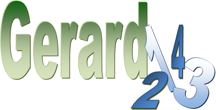

1. Gerard Vergnaud
2. Teoria dos Campos Conceituais
3. Categorização dos tipos de problemas
4. Legendas e Diagramas de Vergnaud
5. Estruturas Aditivas
6. Estruturas Multiplicativas
7. O Software GERARD
Manual produzido por Kecia de Moura
Estudante de Engenharia da Computação
Universidade Federal do Vale do São Francisco - UNIVASF
kecia.de.moura@gmail.com - 2011